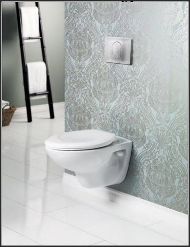
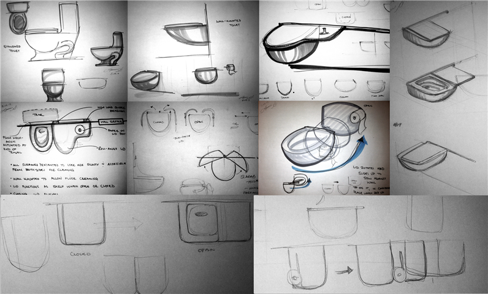

Vacuums
The floors in our house tend to accumulate an unacceptable quantity of dirt regardless of how often we vacuum. I like to walk around barefoot everywhere, so I’m often tracking in grit and dust from the garage and backyard. Cleaning isn’t difficult, but pulling out the vacuum and making a chore of it is a significant barrier.
What if cleaning was a more continuous process, balancing the influx of dirt to keep things at an acceptable level of clean?
The standard solution here is to get some kind of roomba vacuuming robot, but these things get in the way and are inelegant because of their difficulties cleaning the corners where most of the detritus ends up.
We think it would be interesting to integrate a cleaning system into the home to the same degree that a central heating, plumbing, or electrical systems are. Integration improves efficiency.
What if a vacuum disposal system was integrated into every room?
We first imagined the bottom edges of the walls in every room being recessed, with suction pulling any material up and away to a collection container. You could get into an unobtrusive habit of constantly brushing/kicking/sweeping detritus to the edges of the room. However, the vacuum power necessary to generate sufficient air pressure and velocity along such lengths would be prohibitive.
But it might just work if only the corners, where dust naturally collects, of every room in the house were vacuum enabled.
Clogging would be a concern; since the system is integrated into the house, it would be important to have access points to effectively service it. For instance, it could be installed in a panel in the baseboards that can be opened to clear out clogs, if necessary.
Using this system could be as simple as flipping a switch in the room when enough detritus has gathered in the corner that a user notices it. When the spring-cleaning impulse really strikes, a mop or broom could always be employed to really work through an area, and the flip of a switch would finish the job off.
Toilets
We began our first brainstorm discussing daily actions that are clumsier or more obnoxious than they need to be, and the conversation made its way to the topic of toilets. Bathrooms in general are a bane to clean, so the fewer corners involved to collect moisture and dirt, the better. The toilet alone is responsible for much friction (lid up or down, seat up or down?), and has multiple interfaces that present corners or cracks.
To begin we focused on eliminating these cracks. A major cleaning area is the base of the toilet where it meets the floor, and behind the base. Wall-mounted toilets have eliminated this problem, and are a tested, elegant solution. So far, so good.
{kind=link}
Our next area of concern was the hinges where the lid connects to the seat. I had the dubious honor of changing a couple of toilet lids recently, and man, nothing has cemented the difficulty of properly cleaning the hinges as well as removing them and viewing the attendant scunge left behind.
So we began to ask:
Do we need a lid? The answer is yes for the following reasons.
Lids are critical to keep things from falling in when the toilet is not in use, to hide the toilet bowl if it isn’t clean, and to act is a functional surface on which to place clothing, etc. when closed.
So, where can the lid go when the toilet is in use, but employs a mechanism that leaves all surfaces easy to clean?
As we brainstormed, I sketched a number of ideas, but one of our favorites involved sliding the lid to the side of the toilet.
{kind=link}
Looking at standard wall-mounted toilets, which can be mounted in a 6” or 4” deep wall, adding the sliding lid would mean that from the user’s perspective, the lid moves in a thin slot in the wall. All top areas of the lid and toilet bowl are made available to clean - no corners to collect grime! Surfaces presented to a user are smooth and accessible from both sides for cleaning, potentially, closing the lid could actuate a flush - encouraging users to close the lid.
If a seat is desired, this could slide away in the same slot as the lid, and if bathroom space allows for a wall slot twice as wide, the lid could slide smoothly and then catch the seat and slide it away smoothly in succession. Otherwise, the slot in the wall could extend as little as the width of the toilet. The lid could be supported in the whole depth of the wall when it’s off to the side of the bowl (and therefore cantilevered), so the lid material only needs to be stiff enough beyond the wall to support applied torques (similar to what drawers experience). The lid’s bearings also contribute to supporting these loads, but drawer slides are already designed for this kind of loading scenario. Once the lid moves completely off the side of the bowl, it probably needs no more than a standard door width of wall free of studs, which is reasonable from a structural perspective. And finally, when the lid is off the bowl, it can function as a shelf, perhaps with a combined “handle”/post for toilet paper.
{kind=link}
laura@raisinengine.com